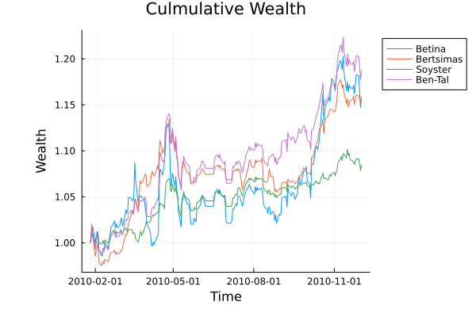

Robust Portfolio Optimization
Robust Return as Risk Constraint
using HiGHS
using Clarabel
using Distributions
using PortfolioOpt
using PortfolioOpt.TestUtils
using MarketData # test data (loads the TimeSeries integration)Read Prices
prices = get_test_data();
numD, numA = size(prices) # A: Assets D: Days(316, 6)Calculating returns
returns_series = percentchange(prices);315×6 TimeSeries.TimeArray{Float64, 2, Dates.Date, Matrix{Float64}} 2009-09-02 to 2010-12-01
┌────────────┬──────────────┬──────────────┬─────────────┬─────────────┬────────
│ │ AAPL │ BA │ DELL │ CAT │ EBAY ⋯
├────────────┼──────────────┼──────────────┼─────────────┼─────────────┼────────
│ 2009-09-02 │ -0.000725953 │ -0.00758663 │ 0.00920447 │ -0.00752737 │ -0.0 ⋯
│ 2009-09-03 │ 0.00829398 │ 0.00123967 │ -0.00651466 │ 0.0351643 │ 0.00 ⋯
│ 2009-09-04 │ 0.0225758 │ 0.0142385 │ 0.0288525 │ 0.0237567 │ 0.0 ⋯
│ 2009-09-08 │ 0.0153837 │ 0.00712106 │ 0.0172084 │ 0.0186511 │ -0.0 ⋯
│ 2009-09-09 │ -0.010351 │ 0.0208081 │ -0.00250627 │ 0.0306579 │ 0.0 ⋯
│ 2009-09-10 │ 0.0082973 │ -0.000791609 │ 0.040201 │ 0.00578393 │ 0.0 ⋯
│ 2009-09-11 │ -0.00231803 │ 0.0170331 │ 0.00241546 │ -0.0032861 │ 0.00 ⋯
│ 2009-09-14 │ 0.00906134 │ -0.00740019 │ -0.0126506 │ 0.00494539 │ 0.0 ⋯
│ ⋮ │ ⋮ │ ⋮ │ ⋮ │ ⋮ │ ⋱
│ 2010-11-22 │ 0.0216151 │ 0.00691933 │ 0.00431655 │ 0.00035727 │ 0.0 ⋯
│ 2010-11-23 │ -0.0147753 │ -0.0067156 │ -0.0100287 │ -0.0163095 │ -0.0 ⋯
│ 2010-11-24 │ 0.0196612 │ 0.0284591 │ 0.00434153 │ 0.0249304 │ 0.0 ⋯
│ 2010-11-26 │ 0.000635324 │ -0.00932579 │ -0.0165706 │ -0.00661235 │ -0.00 ⋯
│ 2010-11-29 │ 0.00593651 │ -0.00679012 │ -0.00586081 │ -0.00546773 │ -0.0 ⋯
│ 2010-11-30 │ -0.0180516 │ -0.00916718 │ -0.0257922 │ 0.0111151 │ -0.0 ⋯
│ 2010-12-01 │ 0.0168729 │ 0.0305786 │ 0.0143722 │ 0.0336879 │ 0.00 ⋯
└────────────┴──────────────┴──────────────┴─────────────┴─────────────┴────────
2 columns and 300 rows omittedBacktest parameters
DEFAULT_SOLVER = optimizer_with_attributes(
HiGHS.Optimizer, "presolve" => "on", "time_limit" => 60.0, "log_to_console" => false
)
Clarabel_SOLVER = optimizer_with_attributes(
Clarabel.Optimizer, "verbose" => false, "max_iter" => 900000
)
date_range = timestamp(returns_series)[100:end];216-element Vector{Dates.Date}:
2010-01-26
2010-01-27
2010-01-28
2010-01-29
2010-02-01
2010-02-02
2010-02-03
2010-02-04
2010-02-05
2010-02-08
⋮
2010-11-18
2010-11-19
2010-11-22
2010-11-23
2010-11-24
2010-11-26
2010-11-29
2010-11-30
2010-12-01Backtest Soyster's robust return
backtest_results = Dict()
backtest_results["Soyster"], _ = sequential_backtest_market(
VolumeMarketHistory(returns_series), date_range
) do market, past_returns, ext
numD, numA = size(past_returns)
returns = values(past_returns)
k_back = 30
Σ, r̄ = mean_variance(returns[(end - k_back):end, :])
d = MvNormal(r̄, Σ)
R = -0.015 / market_budget(market)
formulation = PortfolioFormulation(
MAX_SENSE,
ObjectiveTerm(ExpectedReturn(d)),
RiskConstraint(
ExpectedReturn(
BudgetSet(d; Δ=maximum(abs.(returns); dims=1)'[:] .- r̄, Γ=numA * 1.0)
),
GreaterThan(R),
),
)
pointers = change_bids!(market, formulation, DEFAULT_SOLVER)
return pointers
end(Dict{Symbol, StateRecorder}(:decisions => PortfolioOpt.DecisionRecorder{Float64}(2-dimensional DenseAxisArray{Float64,2,...} with index sets:
Dimension 1, [Dates.Date("2010-01-26"), Dates.Date("2010-01-27"), Dates.Date("2010-01-28"), Dates.Date("2010-01-29"), Dates.Date("2010-02-01"), Dates.Date("2010-02-02"), Dates.Date("2010-02-03"), Dates.Date("2010-02-04"), Dates.Date("2010-02-05"), Dates.Date("2010-02-08") … Dates.Date("2010-11-17"), Dates.Date("2010-11-18"), Dates.Date("2010-11-19"), Dates.Date("2010-11-22"), Dates.Date("2010-11-23"), Dates.Date("2010-11-24"), Dates.Date("2010-11-26"), Dates.Date("2010-11-29"), Dates.Date("2010-11-30"), Dates.Date("2010-12-01")]
Dimension 2, 1:6
And data, a 216×6 Matrix{Float64}:
-0.0 -0.0 -0.0 0.0 -0.0 0.22133782399067825
-0.0 -0.0 -0.0 -0.0 -0.0 0.22274374461691798
-0.0 -0.0 -0.0 0.0 -0.0 0.22346785096665636
-0.0 -0.0 -0.0 0.0 -0.0 0.22264233125936223
0.0 -0.0 0.0 0.0 -0.0 0.2130308591611971
-0.0 -0.0 0.0 0.0 -0.0 0.21026542724706543
-0.0 -0.0 0.0 0.0 -0.0 0.21181605677601587
-0.0 -0.0 0.0 0.0 -0.0 0.21732069450387714
0.0 -0.0 0.0 0.0 0.0 0.2040926851602657
0.0 -0.0 0.0 0.0 -0.0 0.2024300359954988
⋮ ⋮
-0.0 0.0 0.0 -0.0 -0.0 0.20601915037031057
-0.0 0.0 -0.0 -0.0 0.1944466634604701 -0.0
-0.0 0.0 -0.0 -0.0 -0.0 0.19850920482854967
-0.0 0.0 -0.0 -0.0 0.1941799010326254 -0.0
-0.0 0.0 -0.0 -0.0 0.19434675809892202 -0.0
-0.0 0.0 -0.0 -0.0 0.198113869042182 -0.0
-0.0 0.0 0.0 -0.0 0.19472377696208812 -0.0
-0.0 0.0 0.0 -0.0 0.1878552264024443 -0.0
0.0 0.0 0.0 -0.0 -0.0 0.1903899042825381), :wealth => PortfolioOpt.WealthRecorder{Float64}(1-dimensional DenseAxisArray{Float64,1,...} with index sets:
Dimension 1, [Dates.Date("2010-01-26"), Dates.Date("2010-01-27"), Dates.Date("2010-01-28"), Dates.Date("2010-01-29"), Dates.Date("2010-02-01"), Dates.Date("2010-02-02"), Dates.Date("2010-02-03"), Dates.Date("2010-02-04"), Dates.Date("2010-02-05"), Dates.Date("2010-02-08") … Dates.Date("2010-11-18"), Dates.Date("2010-11-19"), Dates.Date("2010-11-22"), Dates.Date("2010-11-23"), Dates.Date("2010-11-24"), Dates.Date("2010-11-26"), Dates.Date("2010-11-29"), Dates.Date("2010-11-30"), Dates.Date("2010-12-01"), Dates.Date("2010-12-02")]
And data, a 217-element Vector{Float64}:
1.0
1.0032107027958757
1.0103767213894495
1.0076680201656112
0.996545660058877
1.002048302177432
1.007153667767064
1.011802834948276
1.0009741405485983
0.9982061565726453
⋮
1.0904873347476276
1.0887699451783006
1.087794469970298
1.0848792364691553
1.0915120118449635
1.0911311457077468
1.0853800742854316
1.0786065977131964
1.0848175607136306), :returns => PortfolioOpt.ReturnsRecorder{Float64}(1-dimensional DenseAxisArray{Float64,1,...} with index sets:
Dimension 1, [Dates.Date("2010-01-26"), Dates.Date("2010-01-27"), Dates.Date("2010-01-28"), Dates.Date("2010-01-29"), Dates.Date("2010-02-01"), Dates.Date("2010-02-02"), Dates.Date("2010-02-03"), Dates.Date("2010-02-04"), Dates.Date("2010-02-05"), Dates.Date("2010-02-08") … Dates.Date("2010-11-17"), Dates.Date("2010-11-18"), Dates.Date("2010-11-19"), Dates.Date("2010-11-22"), Dates.Date("2010-11-23"), Dates.Date("2010-11-24"), Dates.Date("2010-11-26"), Dates.Date("2010-11-29"), Dates.Date("2010-11-30"), Dates.Date("2010-12-01")]
And data, a 216-element Vector{Float64}:
0.0032107027958756342
0.007143084272927611
-0.0026808824535400387
-0.01103772262704757
0.0055217160026865535
0.005094929634168496
0.00461614481484187
-0.010702376021936383
-0.002765290194645817
0.0011152730505045718
⋮
-0.006302792592161171
-0.0015748826369675444
-0.0008959424461730876
-0.0026799488153512454
0.006113837515588495
-0.0003489344442236808
-0.005270742609574128
-0.006240649457927837
0.005758320979680924)), nothing)Backtest Bertsimas's robust return
backtest_results["Bertsimas"], _ = sequential_backtest_market(
VolumeMarketHistory(returns_series), date_range
) do market, past_returns, ext
numD, numA = size(past_returns)
returns = values(past_returns)
k_back = 30
Σ, r̄ = mean_variance(returns[(end - k_back):end, :])
d = MvNormal(r̄, Σ)
R = -0.015 / market_budget(market)
formulation = PortfolioFormulation(
MAX_SENSE,
ObjectiveTerm(ExpectedReturn(d)),
RiskConstraint(
ExpectedReturn(
BudgetSet(d; Δ=maximum(abs.(returns); dims=1)'[:] .- r̄, Γ=numA * 0.3)
),
GreaterThan(R),
),
)
pointers = change_bids!(market, formulation, DEFAULT_SOLVER)
return pointers
end(Dict{Symbol, StateRecorder}(:decisions => PortfolioOpt.DecisionRecorder{Float64}(2-dimensional DenseAxisArray{Float64,2,...} with index sets:
Dimension 1, [Dates.Date("2010-01-26"), Dates.Date("2010-01-27"), Dates.Date("2010-01-28"), Dates.Date("2010-01-29"), Dates.Date("2010-02-01"), Dates.Date("2010-02-02"), Dates.Date("2010-02-03"), Dates.Date("2010-02-04"), Dates.Date("2010-02-05"), Dates.Date("2010-02-08") … Dates.Date("2010-11-17"), Dates.Date("2010-11-18"), Dates.Date("2010-11-19"), Dates.Date("2010-11-22"), Dates.Date("2010-11-23"), Dates.Date("2010-11-24"), Dates.Date("2010-11-26"), Dates.Date("2010-11-29"), Dates.Date("2010-11-30"), Dates.Date("2010-12-01")]
Dimension 2, 1:6
And data, a 216×6 Matrix{Float64}:
0.20289308736653008 0.24486952446614163 … 0.12726584082925055
0.1953388446189664 0.2406374061910353 0.12537474874411003
0.1988578503457958 0.13702293602214888 0.1268202707862655
0.19187430733948374 0.13507535643019292 0.12469450606375981
0.0 -0.0 0.2154258801732391
0.18592588582365166 0.13173051868102523 … 0.11898605661333382
0.18584228910267342 0.1323870870545527 0.1195078623397213
0.19412986482017278 0.13552701359555935 0.12379524488343199
0.0 0.13060766191114231 0.11618447426663103
0.0 -0.0 0.20716602453458405
⋮ ⋱ ⋮
0.10960021189313257 0.0 0.11094174387120356
0.11196184769442043 0.0 0.10966622870818175
0.1115496686720318 0.0 0.10970771038082248
0.10985249024803737 0.0 … 0.10644013245886835
0.10734653247722736 0.0 0.10316144334132374
0.10918578734767426 0.0 0.10521880851067232
0.1083492903535176 0.0 0.10547950413651316
0.10650457785573118 0.0 0.10278488574177262
0.0 0.0 … 0.10091695075143108), :wealth => PortfolioOpt.WealthRecorder{Float64}(1-dimensional DenseAxisArray{Float64,1,...} with index sets:
Dimension 1, [Dates.Date("2010-01-26"), Dates.Date("2010-01-27"), Dates.Date("2010-01-28"), Dates.Date("2010-01-29"), Dates.Date("2010-02-01"), Dates.Date("2010-02-02"), Dates.Date("2010-02-03"), Dates.Date("2010-02-04"), Dates.Date("2010-02-05"), Dates.Date("2010-02-08") … Dates.Date("2010-11-18"), Dates.Date("2010-11-19"), Dates.Date("2010-11-22"), Dates.Date("2010-11-23"), Dates.Date("2010-11-24"), Dates.Date("2010-11-26"), Dates.Date("2010-11-29"), Dates.Date("2010-11-30"), Dates.Date("2010-12-01"), Dates.Date("2010-12-02")]
And data, a 217-element Vector{Float64}:
1.0
1.004043437302107
1.0202303887788664
1.0070587774742485
0.9854664536358562
0.9910309597657923
0.9950883355571601
1.000583481647906
0.9789876757052475
0.9753863292008882
⋮
1.1539393095922201
1.1560936487758386
1.1595648969049797
1.1503998592100997
1.160801926795803
1.1595378469378816
1.1562190604616973
1.1511262663057789
1.1585028008715885), :returns => PortfolioOpt.ReturnsRecorder{Float64}(1-dimensional DenseAxisArray{Float64,1,...} with index sets:
Dimension 1, [Dates.Date("2010-01-26"), Dates.Date("2010-01-27"), Dates.Date("2010-01-28"), Dates.Date("2010-01-29"), Dates.Date("2010-02-01"), Dates.Date("2010-02-02"), Dates.Date("2010-02-03"), Dates.Date("2010-02-04"), Dates.Date("2010-02-05"), Dates.Date("2010-02-08") … Dates.Date("2010-11-17"), Dates.Date("2010-11-18"), Dates.Date("2010-11-19"), Dates.Date("2010-11-22"), Dates.Date("2010-11-23"), Dates.Date("2010-11-24"), Dates.Date("2010-11-26"), Dates.Date("2010-11-29"), Dates.Date("2010-11-30"), Dates.Date("2010-12-01")]
And data, a 216-element Vector{Float64}:
0.004043437302106927
0.0161217641342831
-0.0129104283203946
-0.021440976754650714
0.005646570828875985
0.004094095902237763
0.005522269626112103
-0.021583212534241898
-0.003678643351424106
0.0011680686489537598
⋮
0.0029311006049640475
0.0018669432315116582
0.003002566559219948
-0.007903859214212586
0.009042132179019523
-0.0010889711920195457
-0.002862163132448593
-0.0044046965926032135
0.006408102031658544)), nothing)Backtest BenTal's robust return
backtest_results["Ben-Tal"], _ = sequential_backtest_market(
VolumeMarketHistory(returns_series), date_range
) do market, past_returns, ext
numD, numA = size(past_returns)
returns = values(past_returns)
k_back = 30
Σ, r̄ = mean_variance(returns[(end - k_back):end, :])
d = MvNormal(r̄, Σ)
R = -0.015 / market_budget(market)
formulation = PortfolioFormulation(
MAX_SENSE,
ObjectiveTerm(ExpectedReturn(d)),
RiskConstraint(ExpectedReturn(EllipticalSet(d, 2.0)), GreaterThan(R)),
)
pointers = change_bids!(market, formulation, Clarabel_SOLVER)
return pointers
end(Dict{Symbol, StateRecorder}(:decisions => PortfolioOpt.DecisionRecorder{Float64}(2-dimensional DenseAxisArray{Float64,2,...} with index sets:
Dimension 1, [Dates.Date("2010-01-26"), Dates.Date("2010-01-27"), Dates.Date("2010-01-28"), Dates.Date("2010-01-29"), Dates.Date("2010-02-01"), Dates.Date("2010-02-02"), Dates.Date("2010-02-03"), Dates.Date("2010-02-04"), Dates.Date("2010-02-05"), Dates.Date("2010-02-08") … Dates.Date("2010-11-17"), Dates.Date("2010-11-18"), Dates.Date("2010-11-19"), Dates.Date("2010-11-22"), Dates.Date("2010-11-23"), Dates.Date("2010-11-24"), Dates.Date("2010-11-26"), Dates.Date("2010-11-29"), Dates.Date("2010-11-30"), Dates.Date("2010-12-01")]
Dimension 2, 1:6
And data, a 216×6 Matrix{Float64}:
1.8028596103630076e-8 9.464979401938512e-9 … 0.342138705552063
8.11615008856765e-9 4.277892094621108e-8 0.3398766550318159
3.527332365459436e-9 0.06512786732315698 0.3053917789149786
7.202111268316925e-9 0.0742601893471174 0.3068342594985491
3.5008892628482425e-9 0.016657117337845376 0.2973637710304776
1.0975851975001953e-8 0.1110619358523797 … 0.23825015707363326
2.403730711486592e-9 0.1272842257702233 0.23520948507120476
5.733163455754555e-9 0.09070917768265936 0.2632203510731715
5.898255820129151e-9 0.1977868442990932 0.16075610775190957
1.366107193182183e-8 0.07002215315778852 0.24190068373661314
⋮ ⋱ ⋮
6.532960637136821e-9 8.764680558773461e-10 0.26324861230498653
6.181028658292432e-8 9.626863207647872e-9 0.16161959221195132
1.8948850291706075e-8 2.3228570648255e-9 0.1657194565934186
8.650342959877987e-8 9.144340351840079e-9 … 0.13468213846526136
6.035656437171979e-9 1.0897651574512783e-9 0.061021813034721616
2.5154253385633063e-8 6.947484030446522e-9 0.04745559586032723
2.5901465146441773e-8 4.394174094882903e-9 0.1099015418384578
2.4423706918106975e-8 1.0587129868300318e-9 0.13618940830989434
6.63027545356187e-10 6.054041299614613e-10 … 0.16557103093804593), :wealth => PortfolioOpt.WealthRecorder{Float64}(1-dimensional DenseAxisArray{Float64,1,...} with index sets:
Dimension 1, [Dates.Date("2010-01-26"), Dates.Date("2010-01-27"), Dates.Date("2010-01-28"), Dates.Date("2010-01-29"), Dates.Date("2010-02-01"), Dates.Date("2010-02-02"), Dates.Date("2010-02-03"), Dates.Date("2010-02-04"), Dates.Date("2010-02-05"), Dates.Date("2010-02-08") … Dates.Date("2010-11-18"), Dates.Date("2010-11-19"), Dates.Date("2010-11-22"), Dates.Date("2010-11-23"), Dates.Date("2010-11-24"), Dates.Date("2010-11-26"), Dates.Date("2010-11-29"), Dates.Date("2010-11-30"), Dates.Date("2010-12-01"), Dates.Date("2010-12-02")]
And data, a 217-element Vector{Float64}:
1.0
1.0066086246115695
1.0170831793929394
1.0109178577595133
0.9925294063534723
1.0007249686180562
1.006671595819504
1.0109724707579035
0.9936291555243063
0.9883814234555409
⋮
1.1951478010884298
1.193720652018021
1.1972180123161908
1.1856607387261826
1.2034890713125996
1.202406199192682
1.1903451809328613
1.177483572882184
1.1875511390497429), :returns => PortfolioOpt.ReturnsRecorder{Float64}(1-dimensional DenseAxisArray{Float64,1,...} with index sets:
Dimension 1, [Dates.Date("2010-01-26"), Dates.Date("2010-01-27"), Dates.Date("2010-01-28"), Dates.Date("2010-01-29"), Dates.Date("2010-02-01"), Dates.Date("2010-02-02"), Dates.Date("2010-02-03"), Dates.Date("2010-02-04"), Dates.Date("2010-02-05"), Dates.Date("2010-02-08") … Dates.Date("2010-11-17"), Dates.Date("2010-11-18"), Dates.Date("2010-11-19"), Dates.Date("2010-11-22"), Dates.Date("2010-11-23"), Dates.Date("2010-11-24"), Dates.Date("2010-11-26"), Dates.Date("2010-11-29"), Dates.Date("2010-11-30"), Dates.Date("2010-12-01")]
And data, a 216-element Vector{Float64}:
0.006608624611569526
0.01040578684234081
-0.0060617673739389215
-0.01818985713319487
0.008257248815119954
0.005942319206504689
0.0042723714032065685
-0.017155081602365826
-0.005281378912433745
0.0007272960550890557
⋮
-0.003459809178213353
-0.0011941193123637841
0.0029297979324203424
-0.009653441120259228
0.01503662220069041
-0.0008997772773595202
-0.01003073526061221
-0.010804939824764081
0.00855006931681952)), nothing)Backtest Betina's robust return
backtest_results["Betina"], _ = sequential_backtest_market(
VolumeMarketHistory(returns_series), date_range
) do market, past_returns, ext
numD, numA = size(past_returns)
returns = values(past_returns)
k_back = 30
j_robust = 25
R = -0.015 / market_budget(market)
Σ, r̄ = mean_variance(returns[(end - k_back):end, :])
d = MvNormal(r̄, Σ)
formulation = PortfolioFormulation(
MAX_SENSE,
ObjectiveTerm(ExpectedReturn(d)),
RiskConstraint(
ConditionalExpectedReturn(
DeterministicSamples(returns'[:, (end - j_robust):end]); α=0.0
),
GreaterThan(R),
),
)
pointers = change_bids!(market, formulation, DEFAULT_SOLVER)
return pointers
end(Dict{Symbol, StateRecorder}(:decisions => PortfolioOpt.DecisionRecorder{Float64}(2-dimensional DenseAxisArray{Float64,2,...} with index sets:
Dimension 1, [Dates.Date("2010-01-26"), Dates.Date("2010-01-27"), Dates.Date("2010-01-28"), Dates.Date("2010-01-29"), Dates.Date("2010-02-01"), Dates.Date("2010-02-02"), Dates.Date("2010-02-03"), Dates.Date("2010-02-04"), Dates.Date("2010-02-05"), Dates.Date("2010-02-08") … Dates.Date("2010-11-17"), Dates.Date("2010-11-18"), Dates.Date("2010-11-19"), Dates.Date("2010-11-22"), Dates.Date("2010-11-23"), Dates.Date("2010-11-24"), Dates.Date("2010-11-26"), Dates.Date("2010-11-29"), Dates.Date("2010-11-30"), Dates.Date("2010-12-01")]
Dimension 2, 1:6
And data, a 216×6 Matrix{Float64}:
0.0 0.0 0.0 … 0.2540909090909085
0.0 0.0 0.0 0.253157816077229
0.0 0.6137185446847665 0.0 0.0
0.0 0.6099549849010794 0.0 0.0
0.0 0.21204802641048387 0.0 0.16758912938636167
0.0 0.21032620965256546 0.0 … 0.16622831610124383
0.0 0.4731002693601723 0.0 0.0
0.0 0.21007840953985046 0.0 0.16603247082102715
0.0 0.43394409169277687 0.0 0.0
0.0 0.16439121677363955 0.0 0.19043039900320258
⋮ ⋱ ⋮
0.0 0.0 0.0 0.24616530665870662
0.0 0.0 0.0 0.24673733484659163
0.0 0.0 0.0 0.2469473770358822
0.0 0.0 0.0 … 0.0
0.0 0.0 0.0 0.0
0.0 0.0 0.0 0.0
0.0 0.0 0.0 0.0
0.002850902265908184 0.0 0.0 0.21238212882018678
0.0 0.0 0.0 … 0.18649915580765158), :wealth => PortfolioOpt.WealthRecorder{Float64}(1-dimensional DenseAxisArray{Float64,1,...} with index sets:
Dimension 1, [Dates.Date("2010-01-26"), Dates.Date("2010-01-27"), Dates.Date("2010-01-28"), Dates.Date("2010-01-29"), Dates.Date("2010-02-01"), Dates.Date("2010-02-02"), Dates.Date("2010-02-03"), Dates.Date("2010-02-04"), Dates.Date("2010-02-05"), Dates.Date("2010-02-08") … Dates.Date("2010-11-18"), Dates.Date("2010-11-19"), Dates.Date("2010-11-22"), Dates.Date("2010-11-23"), Dates.Date("2010-11-24"), Dates.Date("2010-11-26"), Dates.Date("2010-11-29"), Dates.Date("2010-11-30"), Dates.Date("2010-12-01"), Dates.Date("2010-12-02")]
And data, a 217-element Vector{Float64}:
1.0
1.003685815544383
1.0118303029248839
1.0180735240318015
0.9989636811544662
1.0071416082402296
1.011995852066605
1.008329592310504
0.9927416936197444
0.9860116099319938
⋮
1.168715850573643
1.1677217941116569
1.1708863603335757
1.161775866571341
1.1826487875954759
1.1814937681866458
1.1637320108497125
1.1469810648593284
1.1585012137523891), :returns => PortfolioOpt.ReturnsRecorder{Float64}(1-dimensional DenseAxisArray{Float64,1,...} with index sets:
Dimension 1, [Dates.Date("2010-01-26"), Dates.Date("2010-01-27"), Dates.Date("2010-01-28"), Dates.Date("2010-01-29"), Dates.Date("2010-02-01"), Dates.Date("2010-02-02"), Dates.Date("2010-02-03"), Dates.Date("2010-02-04"), Dates.Date("2010-02-05"), Dates.Date("2010-02-08") … Dates.Date("2010-11-17"), Dates.Date("2010-11-18"), Dates.Date("2010-11-19"), Dates.Date("2010-11-22"), Dates.Date("2010-11-23"), Dates.Date("2010-11-24"), Dates.Date("2010-11-26"), Dates.Date("2010-11-29"), Dates.Date("2010-11-30"), Dates.Date("2010-12-01")]
And data, a 216-element Vector{Float64}:
0.0036858155443830498
0.008114578540779065
0.0061702254704868965
-0.018770592129393616
0.008186410817570983
0.004819822541993041
-0.0036228011692084187
-0.01545913043674663
-0.006779289850526293
-0.0003938374594896224
⋮
-0.0023183689985170276
-0.000850554445289946
0.002710034391647395
-0.007780852242261342
0.017966392334982484
-0.0009766377143788293
-0.015033305985349408
-0.014394161056163774
0.010043887598505044)), nothing)Plot
using Plots
using Plots.PlotMeasures
plt = plot(;
title="Culmulative Wealth",
xlabel="Time",
ylabel="Wealth",
legend=:outertopright,
left_margin=10mm,
);
for (strategy_name, recorders) in backtest_results
plot!(
plt,
axes(get_records(recorders[:wealth]), 1),
get_records(recorders[:wealth]).data;
label=strategy_name,
)
end
plt
This page was generated using Literate.jl.